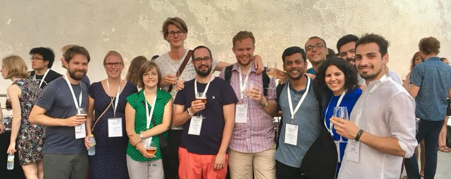
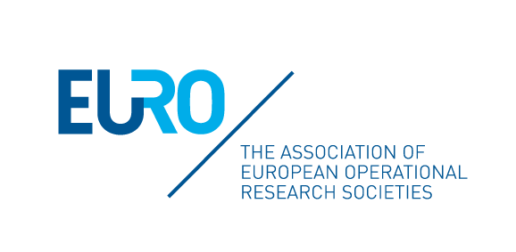

Note: The workshop takes place just after International Workers' Day (1 May) and just before Seville's major festival, the Feria de Abril (4-11 May).
The Feria de Abril in Seville.
About the Workshop
We are pleased to invite you at the first EUROYoung Workshop, a great opportunity for young Operational Research scientists from EURO countries to get together in person.
The workshop is organised by the EUROYoung network, which is a group of young O.R. scientists promoting collaboration among students and early-career researchers, organising training events, providing networking opportunities with leaders in our field, and matching demand and offer in the O.R. job market.

A few EUROYoung members at the EURO2018 conference.
The workshop has been made possible thanks to the contribution of:
Most of all, Marina and Moíses, the local organisers!

Programme
Thursday, 2 May 2019
10:15 - 10:30
Welcome session
10:30 - 12:00
Contributed session
12:00 - 12:30
Coffee break
12:30 - 13:30
Plenary: TODO which speaker?
13:30 - 15:00
Lunch break
15:00 - 16:30
Contributed session
16:30 - 17:00
Coffee break
17:00 - 18:30
Contributed session
Friday, 3 May 2019
09:30 - 11:00
Contributed session
11:00 - 12:30
Coffee break and networking.
Tutoring sessions with the invited speakers.
12:30 - 13:30
Plenary: TODO which speaker?
13:30 - 15:00
Lunch break
15:00 - 16:30
Contributed session
Travel and Accommodation
Getting to Seville
Sevilla has an international airport (SVQ) located at just 25 minutes from the city.
A special bus shuttle runs about every 15 minutes, and costs 4 euros.
Taxis have fixed-fee fares of 22 euros during day, and 25 euros during night.
Another option is to fly to Jerez de la Frontera (XRY) which is also served by low-cost airlines.
The airport has its own train station and the Cádiz-Seville line passes through it, so it's easy to take a train to Seville directly from the airport.
Other than by air, you might want to arrive by train.
The high-speed train AVE serves Seville and connects it with Cordoba (less than 1 hour), Toledo (about 2 hours) and Madrid (less than 3 hours), among other cities.
Seville is also served by mid-distance and short-distance trains, connecting it to other cities in Spain.
Finally, there are night train services, such as the Barcelona-Seville line.
All tickets can be purchased on the website of Renfe.
Getting around in Seville
Seville has an amazing and very walkable city centre.
The city also has various public transport options, including a metro line, a tram line and about 40 bus lines, operated by TUSSAM.
TODO: check if we can get tickets.
Accommodation
The acommodation provided by the workshop is TODO.